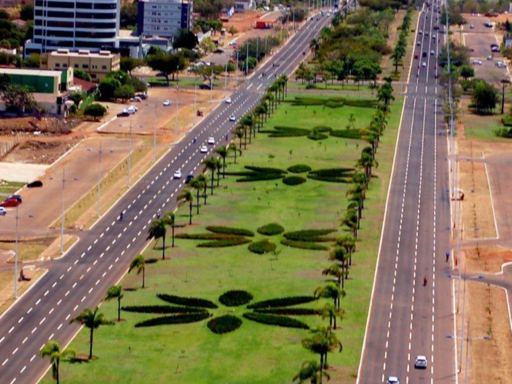

O Tocantins é o estado mais jovem do Brasil, emancipado de Goiás em 1988. Localizado na região Norte, destaca-se pelo agronegócio e pelo turismo ecológico. Sua capital, Palmas, é uma cidade planejada conhecida pela modernidade. O estado também abriga belezas naturais únicas, como o Parque Estadual do Jalapão e parte da Ilha do Bananal.
